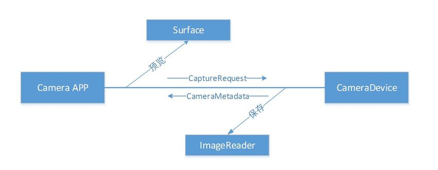

<!DOCTYPE html>
<html lang="en">

<!-- Head tag -->
<head><meta name="generator" content="Hexo 3.9.0">
    <meta charset="utf-8">
    <meta http-equiv="X-UA-Compatible" content="IE=edge">
    <meta name="google-site-verification" content="xBT4GhYoi5qRD5tr338pgPM5OWHHIDR6mNg1a3euekI">
    <meta name="viewport" content="width=device-width, initial-scale=1">
    <meta name="description" content="">
    <meta name="keyword" content="">
    <link rel="shortcut icon" href="/img/ironman-draw.png">
    <!-- Place this tag in your head or just before your close body tag. -->
    <script async defer src="https://buttons.github.io/buttons.js"></script>
    <title>
        
          Camera2新特性 - forevercqd | Blog
        
    </title>

    <link rel="canonical" href="http://www.huweihuang.com/article/Camera2新特性/">

    <!-- Bootstrap Core CSS -->
    <link rel="stylesheet" href="/css/bootstrap.min.css">

    <!-- Custom CSS --> 
    <link rel="stylesheet" href="/css/beantech.min.css">

    <link rel="stylesheet" href="/css/donate.css">
    
    <!-- Pygments Highlight CSS -->
    <link rel="stylesheet" href="/css/highlight.css">

    <link rel="stylesheet" href="/css/widget.css">

    <link rel="stylesheet" href="/css/rocket.css">

    <link rel="stylesheet" href="/css/signature.css">

    <link rel="stylesheet" href="/css/toc.css">

    <!-- Custom Fonts -->
    <!-- <link href="https://maxcdn.bootstrapcdn.com/font-awesome/4.3.0/css/font-awesome.min.css" rel="stylesheet" type="text/css"> -->
    <!-- Hux change font-awesome CDN to qiniu -->
    <link href="https://cdn.staticfile.org/font-awesome/4.5.0/css/font-awesome.min.css" rel="stylesheet" type="text/css">


    <!-- Hux Delete, sad but pending in China
    <link href='http://fonts.googleapis.com/css?family=Lora:400,700,400italic,700italic' rel='stylesheet' type='text/css'>
    <link href='http://fonts.googleapis.com/css?family=Open+Sans:300italic,400italic,600italic,700italic,800italic,400,300,600,700,800' rel='stylesheet' type='text/
    css'>
    -->


    <!-- HTML5 Shim and Respond.js IE8 support of HTML5 elements and media queries -->
    <!-- WARNING: Respond.js doesn't work if you view the page via file:// -->
    <!--[if lt IE 9]>
        <script src="https://oss.maxcdn.com/libs/html5shiv/3.7.0/html5shiv.js"></script>
        <script src="https://oss.maxcdn.com/libs/respond.js/1.4.2/respond.min.js"></script>
    <![endif]-->

    <!-- ga & ba script hoook -->
    <script></script>
</head>


<!-- hack iOS CSS :active style -->
<body ontouchstart="">
	<!-- Modified by Yu-Hsuan Yen -->
<!-- Post Header -->
<style type="text/css">
    header.intro-header{
        
            background-image: url('/img/article_header/article_bg.jpg')
            /*post*/
        
    }
    
</style>

<header class="intro-header" >
    <!-- Signature -->
    <div id="signature">
        <div class="container">
            <div class="row">
                <div class="col-lg-8 col-lg-offset-2 col-md-10 col-md-offset-1">
                
                    <div class="post-heading">
                        <div class="tags">
                            
                              <a class="tag" href="/tags/#Camera2" title="Camera2">Camera2</a>
                            
                        </div>
                        <h1>Camera2新特性</h1>
                        <h2 class="subheading"></h2>
                        <span class="meta">
                            Posted by forevercqd on
                            2019-07-19
                        </span>
                    </div>
                


                </div>
            </div>
        </div>
    </div>
</header>

	
    <!-- Navigation -->
<nav class="navbar navbar-default navbar-custom navbar-fixed-top">
    <div class="container-fluid">
        <!-- Brand and toggle get grouped for better mobile display -->
        <div class="navbar-header page-scroll">
            <button type="button" class="navbar-toggle">
                <span class="sr-only">Toggle navigation</span>
                <span class="icon-bar"></span>
                <span class="icon-bar"></span>
                <span class="icon-bar"></span>
            </button>
            <a class="navbar-brand" href="/">forevercqd</a>
        </div>

        <!-- Collect the nav links, forms, and other content for toggling -->
        <!-- Known Issue, found by Hux:
            <nav>'s height woule be hold on by its content.
            so, when navbar scale out, the <nav> will cover tags.
            also mask any touch event of tags, unfortunately.
        -->
        <div id="huxblog_navbar">
            <div class="navbar-collapse">
                <ul class="nav navbar-nav navbar-right">
                    <li>
                        <a href="/">Home</a>
                    </li>

                    

                        
                    

                        
                        <li>
                            <a href="/about/">About</a>
                        </li>
                        
                    

                        
                        <li>
                            <a href="/archive/">Archives</a>
                        </li>
                        
                    

                        
                        <li>
                            <a href="/tags/">Tags</a>
                        </li>
                        
                    
                    
                </ul>
            </div>
        </div>
        <!-- /.navbar-collapse -->
    </div>
    <!-- /.container -->
</nav>
<script>
    // Drop Bootstarp low-performance Navbar
    // Use customize navbar with high-quality material design animation
    // in high-perf jank-free CSS3 implementation
    var $body   = document.body;
    var $toggle = document.querySelector('.navbar-toggle');
    var $navbar = document.querySelector('#huxblog_navbar');
    var $collapse = document.querySelector('.navbar-collapse');

    $toggle.addEventListener('click', handleMagic)
    function handleMagic(e){
        if ($navbar.className.indexOf('in') > 0) {
        // CLOSE
            $navbar.className = " ";
            // wait until animation end.
            setTimeout(function(){
                // prevent frequently toggle
                if($navbar.className.indexOf('in') < 0) {
                    $collapse.style.height = "0px"
                }
            },400)
        }else{
        // OPEN
            $collapse.style.height = "auto"
            $navbar.className += " in";
        }
    }
</script>


    <!-- Main Content -->
    <!-- Modify by Yu-Hsuan Yen -->

<!-- Post Content -->
<article>
    <div class="container">
        <div class="row">

            <!-- Post Container -->
            <div class="
                col-lg-8 col-lg-offset-2
                col-md-10 col-md-offset-1
                post-container">

                <h1><span id="camera2-新特性">Camera2 新特性</span></h1>
<p>从 Android 5.0 开始，Google 引入了一套全新的相机框架 Camera2（android.hardware.camera2），并且废弃了旧的相机框架 Camera1(android.hardware.Camera)，其目的是配合Camera HAL3，同时赋予应用层更多更灵活的相机控制权限，从而构建出更高质量的相机应用程序。</p>
<h2><span id="更先进灵活的api架构">更先进灵活的API架构</span></h2>
<p>原Camera1中的android.hardware.Camera类被拆分成多个类，分别为CameraManager, CameraDevice, CameraCharacteristics, CameraCaptureSession, CameraRequest, ImageReader 等,　同时Camera2 API相对于Camera1 API调用<br>
Camera2架构采用Pipeline架构，app层与Camera之前主要是通过CaptureRequest与CamerMetaData间相互通信，简化后的流程图如下:<br>
<br>
Camera2 API架构、关键类及API接口的用法，将在下一篇文章《Camera2 API架构及API接口调用流程》中具体介绍。</p>
<h2><span id="更出色的对焦效果">更出色的对焦效果</span></h2>
<p>Camera2在对焦精度及速度方面相对于Camera1，有了较大提升。当然因为不同的芯片厂商与手机厂商对Camera2的支持程度不同，Camer2与Camera1两者的差异大小也会因为不同的芯片及手机厂商略有不同。<br>
以下是<br>
</p>
<h2><span id="不开启相机的条件获取相机参数">不开启相机的条件获取相机参数</span></h2>
<p>Camera1需要在打开相机后获取到具体的　android.hardware.Camera的实例后，才能进一步通过该相机实例获取到具体的相机参数(如前后置相机的CameraID, 特定相机的支持的预览分辨率列表及拍照支持的分辨辨，是否支持闪光灯等)。<br>
Camera2可以在不打开具体相机的条件下，获取到指定相机的相机参数。<br>
因为打开相机会出现较严重的不良用户感受甚至需要特定条件，如以下类型的手机:</p>
<ul>
<li>使用弹出镜头的手机(vivo APEX, OnePlus 7Pro, oppo Reno 10倍变焦、华为P Smart Z)<br>
可以想象在用户打开相机意愿的条件下，app层为了获取相机参数而将用户手机的镜头莫名其妙的弹出会，将会是怎么样的一种场景。</li>
<li>部份滑动后才能打开相机的手机(华为 mage2)<br>
用户在不通过物理方式手动滑出摄像头时，app层是无法打开相机并获取到相机参数。<br>
获取相机参数其实很多场景都会用到，比如上传相机的埋点信息，比如提前手机是否支持广角，进而在app启动时即可自适应显示特定功能等。</li>
</ul>
<h2><span id="不开启预览的情况下拍照">不开启预览的情况下拍照</span></h2>
<p>Camera1拍照前必须先开启预览，即调用android.hardware.Camera.startPreview，该操作一方面耗时，另一方面在某些不可描述场景下显得有点尴尬。<br>
Camera2可以在悄无声息的条件下获取拍照结果，脑补下场景，有无限的空间。</p>
<h2><span id="获取并打开更多的摄像头的权限">获取并打开更多的摄像头的权限</span></h2>
<p>Camera1 的API接口Camera.getNumberOfCameras()在多摄头的手机上，仍只能获取到最多2个摄像头(1个前置、1个后置)，即使APP层明知该设备有多个摄像头可使用，并强行调用Camera.open来打开其它摄像头，会出现打开失败的结果，即最终无法充分使用设备的硬件功能。<br>
目前多摄手机已经成为行业主流标配的环境中，Camera2获取多摄镜头并打开更多特色的镜头，已经成为Camera相关API必不可少的功能。<br>
如广角镜头，使用Camera1无法获取并打开，Camera2可完美解决该问题。</p>
<h2><span id="获取更高的预览分辨率及拍照分辨率">获取更高的预览分辨率及拍照分辨率</span></h2>
<p>相机预览更加高清的画面及拍摄更加高清的图片，已经成为手机厂商及部份app的重要卖点之一，如2019年08月爆出的新闻“全球首款 1 亿像素的传感器来了，首发厂商是小米”，讲的是三星在8月份发布了全球首款「亿」级相机传感器 ISOCELL Bright HMX， 该相机传感器最大可输出12032 x 9024 分辨率的照片。<br>
但是目前Camera1在相机预览分辨率及拍照分辨率两项，经测试明显均劣于Camera2。</p>
<h2><span id="获取同一时刻的图片至多路输出">获取同一时刻的图片至多路输出</span></h2>
<p>Camera1最多可以吐出同一时刻的相机输出流至两路输出。</p>
<ul>
<li>一路是通过设置给相机的SurfaceTexture的回调函数onFrameAvailable，该回调函数返回的是GPU上的surface;</li>
<li>一路是通过设置给相机的PreviewCallback回调函数onPreviewFrame，该回调函数返回的是CPU上的裸数据;</li>
</ul>
<p>Camera2可以吐出同一时刻的相机输出流至两路及更多路的输出。<br>
如预览时可以输出多个surface，可以考虑一个surface做人脸特征点检测，一个surface做渲染，一个surface给硬件编码器。</p>
<h2><span id="获取同一时刻不同的分辨率的相机输出流">获取同一时刻不同的分辨率的相机输出流</span></h2>
<p>Camera1输出的两路流的分辨率无法配置成不同的分辨率，但是Camera2可以配置成不同的输出分辨率，如预览时可使用更高的分辨率1080p或2K来提升预览清晰度，但是送给人脸相关的检测算法的图像的分辨率却可以使用更小的分辨率(如720p，480p等)，在既提升预览清晰度的同时，又降低人脸相关算法的耗时。</p>
<h2><span id="获取多张不同格式和尺寸的拍照图片">获取多张不同格式和尺寸的拍照图片</span></h2>
<p>Camera1一次拍照只能获取一张指定格式指定分辨的图片，但是Camera2可以一次获取多张图片，且各图片格式可以不一样，分辨率也可以不一样，为用户更多复杂的场景提供了灵活性。</p>
<h2><span id="连拍功能">连拍功能</span></h2>
<p>Camera1 API没有提供连拍功能，用户要实现连拍功能，只能在一次拍照结束并返回数据后，再循环调用拍照API接口来实现连拍功能，因此必须串行执行。另外Camera1从拍照命令执行至返回拍照结果间的耗时较长，不同手机，不同的图片分辨率均对耗时产生重大影响。<br>
Camera2实现连拍可以直接调用captureBurst接口实现连拍功能，该实现过程一次性向CameraDevice发送了多次拍照请求，系统中可流水线式依次输出连拍的图片，效率较Camera1更高，使用更快捷方便。</p>
<h2><span id="控制曝光时间">控制曝光时间</span></h2>
<p>Camera1无法控制曝光时间，Camera2可灵活设置曝光时间，在暗光条件下，设置曝光时间可较大程度改善照片清晰度。</p>
<h2><span id="支持帧级别的相机参数调整">支持帧级别的相机参数调整</span></h2>
<p>Camera2每一帧数据返回</p>
<h2><span id="更灵活的线程控制">更灵活的线程控制</span></h2>
<p>开启摄像头线程、预览线程、拍照回调线程都均可自已控制。</p>

                

                <hr>
                <!-- Pager -->
                <ul class="pager">
                    
                        <li class="previous">
                            <a href="/article/android-studio-mac-eclipse－快捷键/" data-toggle="tooltip" data-placement="top" title="android-studio-mac-eclipse－快捷键">&larr; Previous Post</a>
                        </li>
                    
                    
                        <li class="next">
                            <a href="/article/Camera2-广角计算/" data-toggle="tooltip" data-placement="top" title="Camera2 广角计算">Next Post &rarr;</a>
                        </li>
                    
                </ul>

                <br>

                <!--打赏-->
                
                <!--打赏-->

                <br>
                <!--分享-->
                
                    <div class="social-share"  data-wechat-qrcode-helper="" align="center"></div>
                    <!--  css & js -->
                    <link rel="stylesheet" href="https://cdnjs.cloudflare.com/ajax/libs/social-share.js/1.0.16/css/share.min.css">
                    <script src="https://cdnjs.cloudflare.com/ajax/libs/social-share.js/1.0.16/js/social-share.min.js"></script>
                
                <!--分享-->
                <br>                       
                
                <!-- require APlayer -->
                

                <!-- duoshuo Share start -->
                
                <!-- 多说 Share end-->

                <!-- 多说评论框 start -->
                
                <!-- 多说评论框 end -->

                <!-- disqus comment start -->
                
                <!-- disqus comment end -->

                

            </div>
            
            <!-- Tabe of Content -->
            <!-- Table of Contents -->

  
    <style>
      span.toc-nav-number{
        display: none
      }
    </style>
  
    
      <aside id="sidebar">
        <div id="toc" class="toc-article">
        <strong class="toc-title">Contents</strong>
        
          <ol class="toc-nav"><li class="toc-nav-item toc-nav-level-1"><a class="toc-nav-link" href="#null"><span class="toc-nav-number">1.</span> <span class="toc-nav-text">Camera2 新特性</span></a><ol class="toc-nav-child"><li class="toc-nav-item toc-nav-level-2"><a class="toc-nav-link" href="#null"><span class="toc-nav-number">1.1.</span> <span class="toc-nav-text">更先进灵活的API架构</span></a></li><li class="toc-nav-item toc-nav-level-2"><a class="toc-nav-link" href="#null"><span class="toc-nav-number">1.2.</span> <span class="toc-nav-text">更出色的对焦效果</span></a></li><li class="toc-nav-item toc-nav-level-2"><a class="toc-nav-link" href="#null"><span class="toc-nav-number">1.3.</span> <span class="toc-nav-text">不开启相机的条件获取相机参数</span></a></li><li class="toc-nav-item toc-nav-level-2"><a class="toc-nav-link" href="#null"><span class="toc-nav-number">1.4.</span> <span class="toc-nav-text">不开启预览的情况下拍照</span></a></li><li class="toc-nav-item toc-nav-level-2"><a class="toc-nav-link" href="#null"><span class="toc-nav-number">1.5.</span> <span class="toc-nav-text">获取并打开更多的摄像头的权限</span></a></li><li class="toc-nav-item toc-nav-level-2"><a class="toc-nav-link" href="#null"><span class="toc-nav-number">1.6.</span> <span class="toc-nav-text">获取更高的预览分辨率及拍照分辨率</span></a></li><li class="toc-nav-item toc-nav-level-2"><a class="toc-nav-link" href="#null"><span class="toc-nav-number">1.7.</span> <span class="toc-nav-text">获取同一时刻的图片至多路输出</span></a></li><li class="toc-nav-item toc-nav-level-2"><a class="toc-nav-link" href="#null"><span class="toc-nav-number">1.8.</span> <span class="toc-nav-text">获取同一时刻不同的分辨率的相机输出流</span></a></li><li class="toc-nav-item toc-nav-level-2"><a class="toc-nav-link" href="#null"><span class="toc-nav-number">1.9.</span> <span class="toc-nav-text">获取多张不同格式和尺寸的拍照图片</span></a></li><li class="toc-nav-item toc-nav-level-2"><a class="toc-nav-link" href="#null"><span class="toc-nav-number">1.10.</span> <span class="toc-nav-text">连拍功能</span></a></li><li class="toc-nav-item toc-nav-level-2"><a class="toc-nav-link" href="#null"><span class="toc-nav-number">1.11.</span> <span class="toc-nav-text">控制曝光时间</span></a></li><li class="toc-nav-item toc-nav-level-2"><a class="toc-nav-link" href="#null"><span class="toc-nav-number">1.12.</span> <span class="toc-nav-text">支持帧级别的相机参数调整</span></a></li><li class="toc-nav-item toc-nav-level-2"><a class="toc-nav-link" href="#null"><span class="toc-nav-number">1.13.</span> <span class="toc-nav-text">更灵活的线程控制</span></a></li></ol></li></ol>
        
        </div>
      </aside>
    

                
            <!-- Sidebar Container -->
            <div class="
                col-lg-8 col-lg-offset-2
                col-md-10 col-md-offset-1
                sidebar-container">

                <!-- Featured Tags -->
                
                <section>
                    <!-- no hr -->
                    <h5><a href="/tags/">FEATURED TAGS</a></h5>
                    <div class="tags">
                       
                          <a class="tag" href="/tags/#Camera2" title="Camera2">Camera2</a>
                        
                    </div>
                </section>
                

                <!-- Friends Blog -->
                
                <hr>
                <h5>FRIENDS</h5>
                <ul class="list-inline">

                    
                        <li><a href="https://yq.aliyun.com/u/huweihuang" target="_blank">阿里云栖社区 胡伟煌</a></li>
                    
                </ul>
                
            </div>
        </div>
    </div>
</article>


<!-- async load function -->
<script>
    function async(u, c) {
      var d = document, t = 'script',
          o = d.createElement(t),
          s = d.getElementsByTagName(t)[0];
      o.src = u;
      if (c) { o.addEventListener('load', function (e) { c(null, e); }, false); }
      s.parentNode.insertBefore(o, s);
    }
</script>
<!-- anchor-js, Doc:http://bryanbraun.github.io/anchorjs/ -->
<script>
    async("https://cdn.bootcss.com/anchor-js/1.1.1/anchor.min.js",function(){
        anchors.options = {
          visible: 'hover',
          placement: 'left',
          icon: 'ℬ'
        };
        anchors.add().remove('.intro-header h1').remove('.subheading').remove('.sidebar-container h5');
    })
</script>
<style>
    /* place left on bigger screen */
    @media all and (min-width: 800px) {
        .anchorjs-link{
            position: absolute;
            left: -0.75em;
            font-size: 1.1em;
            margin-top : -0.1em;
        }
    }
</style>


<!-- chrome Firefox 中文锚点定位失效-->
<script src="https://cdn.bootcss.com/jquery/3.3.1/jquery.js"></script>
<!-- smooth scroll behavior polyfill  -->
<script type="text/javascript" src="/js/smoothscroll.js"></script>
<script>
        $('#toc').on('click','a',function(a){
            // var isChrome = window.navigator.userAgent.indexOf("Chrome") !== -1;
            // console.log(window.navigator.userAgent,isChrome)
                // if(isChrome) {
                    // console.log(a.currentTarget.outerHTML);
                    // console.log($(a.currentTarget).attr("href"));
                    //跳转到指定锚点
                    // document.getElementById(a.target.innerText.toLowerCase()).scrollIntoView(true);
                    document.getElementById($(a.currentTarget).attr("href").replace("#","")).scrollIntoView({behavior: 'smooth' });
                // }
        })  
</script>


    <!-- Footer -->
    <!-- Footer -->
<footer>
    <div class="container">
        <div class="row">
            <div class="col-lg-8 col-lg-offset-2 col-md-10 col-md-offset-1">
                <ul class="list-inline text-center">
                
                
                

                

                

                
                    <li>
                        <a target="_blank"  href="https://github.com/forevercqd">
                            <span class="fa-stack fa-lg">
                                <i class="fa fa-circle fa-stack-2x"></i>
                                <i class="fa fa-github fa-stack-1x fa-inverse"></i>
                            </span>
                        </a>
                    </li>
                

                

                </ul>
                <p class="copyright text-muted">
                    Copyright &copy; forevercqd 2019 
                    <br>
                    Theme by <a href="http://beantech.org">BeanTech</a> 
                    <span style="display: inline-block; margin: 0 5px;">
                        <i class="fa fa-heart"></i>
                    </span> 
                    re-Ported by <a href="http://www.huweihuang.com">胡伟煌</a> | 
                    <iframe
                        style="margin-left: 2px; margin-bottom:-5px;"
                        frameborder="0" scrolling="0" width="91px" height="20px"
                        src="https://ghbtns.com/github-btn.html?user=huweihuang&repo=hexo-theme-huweihuang&type=star&count=true" >
                    </iframe>
                </p>
            </div>
        </div>
    </div>
</footer>

<!-- jQuery -->
<script src="/js/jquery.min.js"></script>

<!-- Bootstrap Core JavaScript -->
<script src="/js/bootstrap.min.js"></script>

<!-- Custom Theme JavaScript -->
<script src="/js/hux-blog.min.js"></script>


<!-- async load function -->
<script>
    function async(u, c) {
      var d = document, t = 'script',
          o = d.createElement(t),
          s = d.getElementsByTagName(t)[0];
      o.src = u;
      if (c) { o.addEventListener('load', function (e) { c(null, e); }, false); }
      s.parentNode.insertBefore(o, s);
    }
</script>

<!-- 
     Because of the native support for backtick-style fenced code blocks 
     right within the Markdown is landed in Github Pages, 
     From V1.6, There is no need for Highlight.js, 
     so Huxblog drops it officially.

     - https://github.com/blog/2100-github-pages-now-faster-and-simpler-with-jekyll-3-0  
     - https://help.github.com/articles/creating-and-highlighting-code-blocks/    
-->
<!--
    <script>
        async("http://cdn.bootcss.com/highlight.js/8.6/highlight.min.js", function(){
            hljs.initHighlightingOnLoad();
        })
    </script>
    <link href="http://cdn.bootcss.com/highlight.js/8.6/styles/github.min.css" rel="stylesheet">
-->


<!-- jquery.tagcloud.js -->
<script>
    // only load tagcloud.js in tag.html
    if($('#tag_cloud').length !== 0){
        async("http://www.huweihuang.com/js/jquery.tagcloud.js",function(){
            $.fn.tagcloud.defaults = {
                //size: {start: 1, end: 1, unit: 'em'},
                color: {start: '#bbbbee', end: '#0085a1'},
            };
            $('#tag_cloud a').tagcloud();
        })
    }
</script>

<!--fastClick.js -->
<script>
    async("https://cdn.bootcss.com/fastclick/1.0.6/fastclick.min.js", function(){
        var $nav = document.querySelector("nav");
        if($nav) FastClick.attach($nav);
    })
</script>


<!-- Google Analytics -->


<script>
    // dynamic User by Hux
    var _gaId = 'UA-XXXXXXXX-X';
    var _gaDomain = 'yoursite';

    // Originial
    (function(i,s,o,g,r,a,m){i['GoogleAnalyticsObject']=r;i[r]=i[r]||function(){
    (i[r].q=i[r].q||[]).push(arguments)},i[r].l=1*new Date();a=s.createElement(o),
    m=s.getElementsByTagName(o)[0];a.async=1;a.src=g;m.parentNode.insertBefore(a,m)
    })(window,document,'script','//www.google-analytics.com/analytics.js','ga');

    ga('create', _gaId, _gaDomain);
    ga('send', 'pageview');
</script>


<!-- Baidu Tongji -->

<script>
    // dynamic User by Hux
    var _baId = 'xxx';

    // Originial
    var _hmt = _hmt || [];
    (function() {
      var hm = document.createElement("script");
      hm.src = "//hm.baidu.com/hm.js?" + _baId;
      var s = document.getElementsByTagName("script")[0];
      s.parentNode.insertBefore(hm, s);
    })();
</script>


	<a id="rocket" href="#top" class=""></a>
	<script type="text/javascript" src="/js/totop.js?v=1.0.0" async=""></script>
    <script type="text/javascript" src="/js/toc.js?v=1.0.0" async=""></script>
<!-- Image to hack wechat -->

<!-- Migrate from head to bottom, no longer block render and still work -->

</body>

</html>
